<html>
  <head>
    <!-- CSS Load -->
    <link rel="stylesheet" href="css/reset.css" />
    <link rel="stylesheet" href="css/style.css" />
    <!-- jQuery Load -->
    <script
      src="https://code.jquery.com/jquery-3.7.1.js"
      integrity="sha256-eKhayi8LEQwp4NKxN+CfCh+3qOVUtJn3QNZ0TciWLP4="
      crossorigin="anonymous"
    ></script>
    <script src="js/script.js"></script>
  </head>
  <body></body>
</html>

<div class="desktop-1">
  <div class="frame-5">
    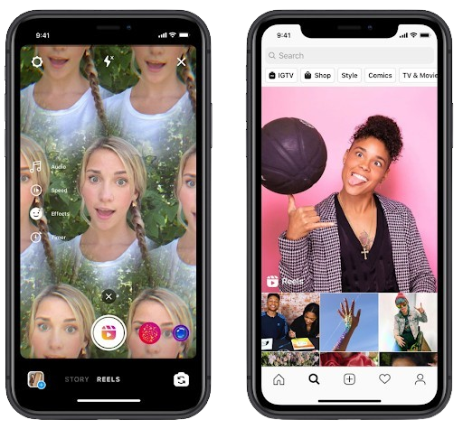
    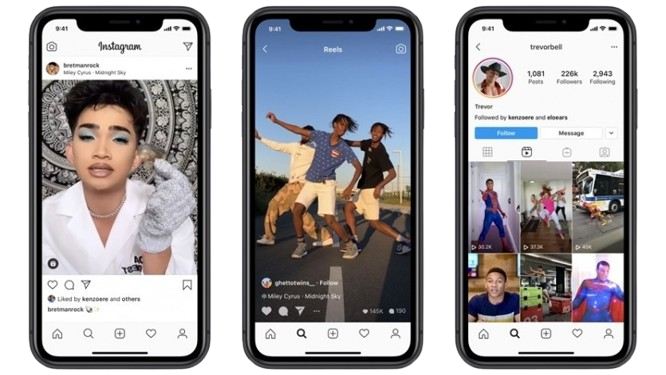
    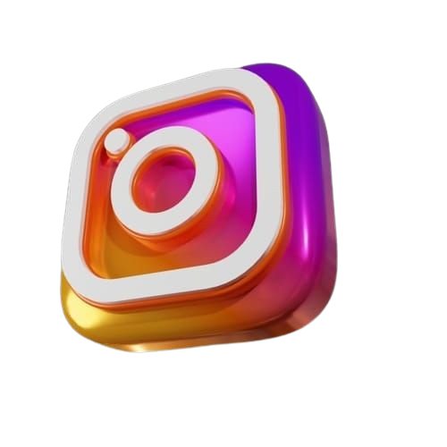
    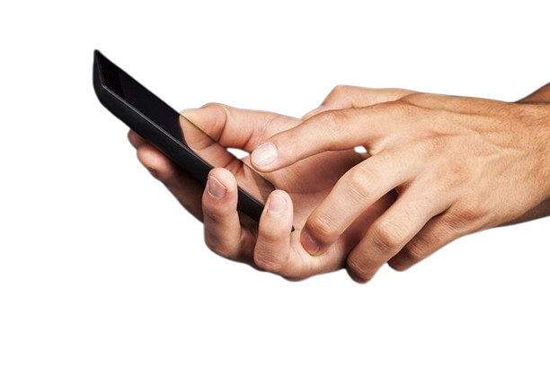
  </div>
  <div class="rectangle-76"></div>
  <div class="frame-4">
    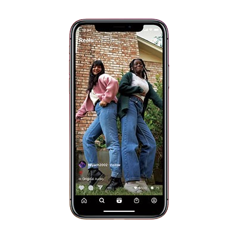
    
    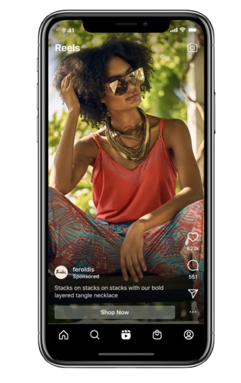
    
    
    
    <div class="_10">전두엽을 갉아먹는 “10초의 유혹”</div>
    <div class="div">이제는 시급한 디지털 디톡스</div>
    <div class="div2">디지털 중독 이제는 내려놔야 할 시간</div>
    <div class="div3">
      스마트폰 과의존은 집중력 저하와 신체적 통증을 일으키며 정신 건강 악화와
      사회적 고립을 초래해 일상적인 삶의 균형을 위협하는 심각한 문제를 초래한다
    </div>
    
    
    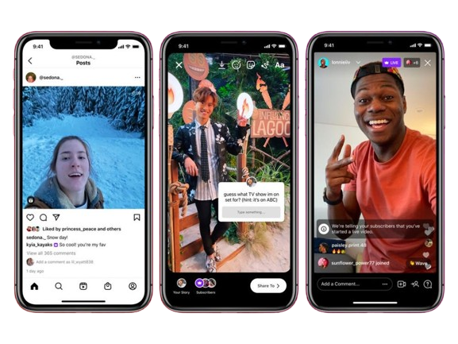
    
    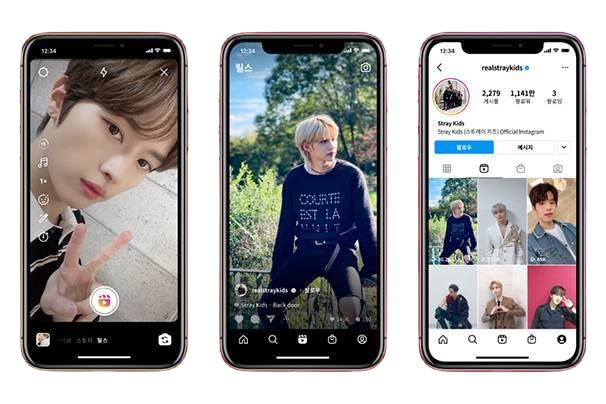
    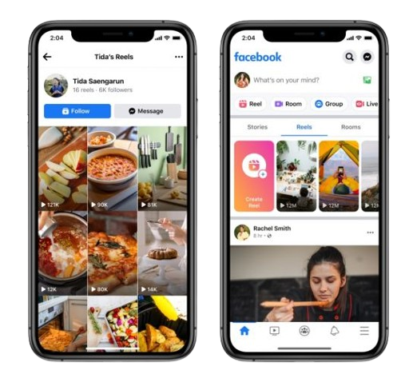
    
    
    
    
    
    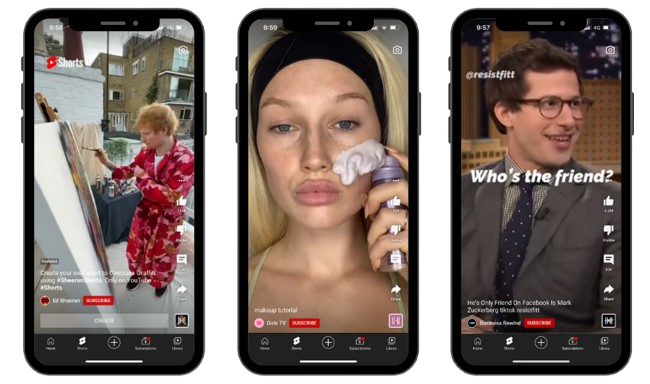
    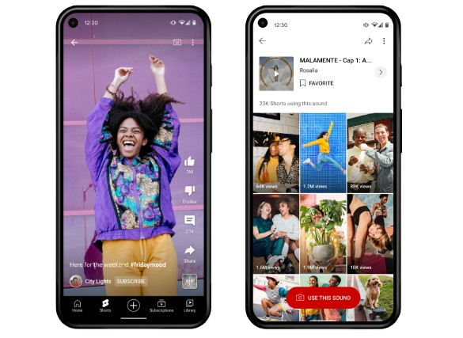
    
    
  </div>
  <div class="div4">스마트폰 과의존</div>
  <div class="mz">도파민에 빠져버린 MZ세대</div>
  
  <div class="div5">스마트폰 과의존이란?</div>
  <div class="div6">
    과도한 스마트폰 이용으로 스마트폰에 대한 현저서이 증가하고, 이용 조절력이
    감소하여 문제적 결과를 경험하는 상태를 말한다.
  </div>
  <div class="rectangle-4"></div>
  <div class="rectangle-512"></div>
  <div class="div7">완전히 발달하지 못한 전두엽</div>
  <div class="div8">
    두뇌에서 사고력과 주의 집중력을 관장하는 ‘전두엽’. 스마트폰을 자주 사용하여
    뇌가 자극을 받아 ‘도파민’이 분비가 되면 성장이 미숙한 청소년들은 뇌에서
    분비량을 제대로 조절하지 못한다.
  </div>
  <div class="div9">수면의 질 저하</div>
  <div class="div10">
    스마트폰 사용은 취침 시간에 영향을 미친다. 특히 스마트폰의 블루라이트는
    수면을 방해하고, 청소년이 충분한 수면을 취하지 못하게 할 수 있어 신체적,
    정신적 건강에 악영향을 끼칠 수 있다.
  </div>
  <div class="pc">
    스마트폰이나 태블릿PC등 스마트 기기가 주는 강한 자극에 자주 노출되면 뇌
    구조가 부정적으로 변화한다.스마트폰 사용 시간이 늘면 부모와 형제자매, 또래
    친구 등 사람과 상호작용하는 시간이 줄어들며, 이로 인해 언어, 인지, 감정,
    사회적 발달에도 악영향을 주게 된다.
    <br />
  </div>
  <div class="div11">강한 자극과 반복적 노출</div>
  <div class="div12">
    청소년 시기는 대인 관계와 사회적 기술을 배우는 중요한 시기이다. 스마트폰
    사용이 지나치면 실제 사람들과의 만남과 대화가 줄어들고, 가상 세계에서의
    상호작용에 의존하게 된다. 이는 사회적 관계 형성에 부정적인 영향을 미치고,
    외로움이나 우울감을 느낄 위험이 커진다.
  </div>
  <div class="div13">사회적 관계의 왜곡</div>
  
  <div class="div14">스마트폰 과의존, 청소년이 더욱 조심해야 하는 이유</div>
  
  
  
  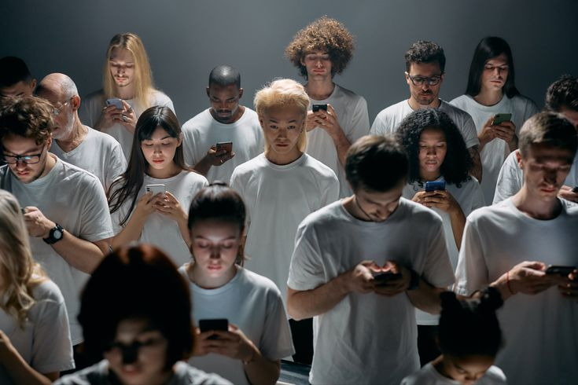
  <div class="div15">스마트폰 과의존 실태조사</div>
  <div class="group-4">
    <div class="rectangle-332"></div>
    <div class="rectangle-342"></div>
    <div class="rectangle-352"></div>
    <div class="rectangle-362"></div>
    <div class="rectangle-372"></div>
    <div class="rectangle-382"></div>
  </div>
  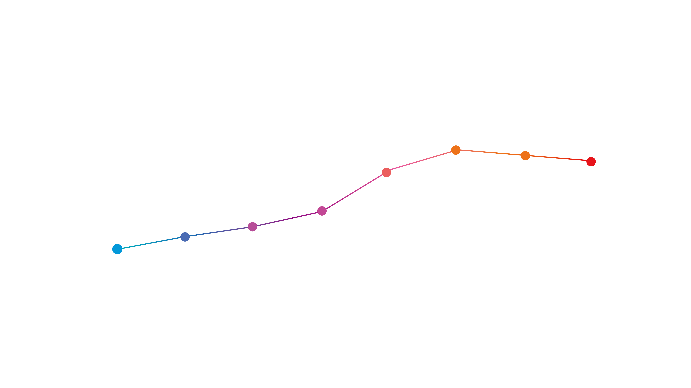
  <div class="div16">스마트폰 과의존 위험군 비율</div>
  <div class="div17">연도별 스마트폰 고위험군, 잠재적 위험군 변화 추이</div>
  <div class="_4-6">기준 : 초(4~6) 중. 고등학생</div>
  <div class="div18">스마트폰 과의존 그래프</div>
  <div class="rectangle-402"></div>
  <div class="rectangle-412"></div>
  <div class="div19">고위험군</div>
  <div class="div20">잠재적 위험군</div>
  <div class="group-8">
    <div class="rectangle-42"></div>
    <div class="rectangle-443"></div>
    <div class="rectangle-453"></div>
    <div class="rectangle-462"></div>
    <div class="rectangle-472"></div>
    <div class="rectangle-482"></div>
    <div class="rectangle-492"></div>
    <div class="rectangle-432"></div>
    <div class="rectangle-502"></div>
  </div>
  
  
  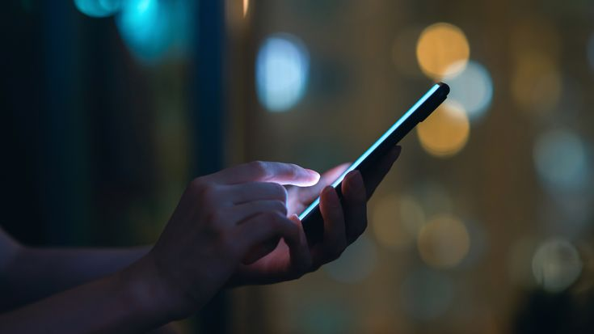
  <div class="div21">청소년 스마트폰 과의존 위혐군 비율 무려</div>
  <div class="div22">
    과도한 스마트폰 사용은 학업 성취도 저하와 사회적 고립을 초래할 수 있으며,
    우울증과 불안증 등 정신 건강 문제를 악화시킬 위험이 크다. 전문가들은 부모와
    교육기관이 청소년들의 스마트폰 사용을 철저히 관리해야 한다고 경고하고 있다.
  </div>
  <div class="div23">
    스마트폰 과의존 위험군 비율은 연령, 성별, 사회적 요인, 건강 상태 등 여러
    요소에 따라 달라집니다. 일반적으로 청소년과 청년층에서 과의존 위험군 비율이
    높으며, 이들은 스마트폰을 통한 소셜 미디어, 게임, 메시징 앱 등에서 많은
    시간을 소비합니다.
  </div>
  <div class="_40-1">40.1%</div>
  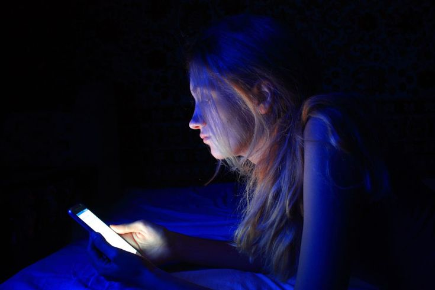
  <div class="rectangle-68"></div>
  <div class="rectangle-70"></div>
  <div class="rectangle-72"></div>
  <div class="rectangle-74"></div>
  <div class="rectangle-69"></div>
  <div class="rectangle-71"></div>
  <div class="rectangle-73"></div>
  <div class="rectangle-75"></div>
  <div class="r-e-s-t">
    스마트폰 과의존, 어떻게 예방하면 좋을까? 스마트폰 쉼(R.E.S.T)를 지켜보자
  </div>
  <div class="r">R</div>
  <div class="problem-recognition">
    <span>
      <span class="problem-recognition-span">
        스마트폰 과의존 문제의식
        <br />
        (Problem
      </span>
      <span class="problem-recognition-span2">r</span>
      <span class="problem-recognition-span3">ecognition)</span>
    </span>
  </div>
  <div class="state-check">
    <span>
      <span class="state-check-span">
        과의존 척도를 활용한 사용 상태 정검
        <br />
        (Stat
      </span>
      <span class="state-check-span2">e</span>
      <span class="state-check-span3">check)</span>
    </span>
  </div>
  <div class="suggest-an-altemative">
    <span>
      <span class="suggest-an-altemative-span">
        바른 사용 실천 방안 및
        <br />
        대안 제시
        <br />
        (
      </span>
      <span class="suggest-an-altemative-span2">S</span>
      <span class="suggest-an-altemative-span3">uggest an altemative)</span>
    </span>
  </div>
  <div class="connect">
    <span>
      <span class="connect-span">
        가족, 친구 등 주변 사람과의 관계형성 강화
        <br />
        (Connec
      </span>
      <span class="connect-span2">t</span>
      <span class="connect-span3">)</span>
    </span>
  </div>
  <div class="e">E</div>
  <div class="s">S</div>
  <div class="t">T</div>
  <div class="div24">
    편한 자세보다 불편해도
    <br />
    ‘바른 자세’를 유지하기
    <br />
    <br />
    일정 시간 후에는 눈 건강
    <br />
    체조와 스트레칭으로 건강
    <br />
    지키기
  </div>
  <div class="div25">
    자신이 스마트폰을 과도하게
    <br />
    이용하고 있는 것은 아닌지
    <br />
    체크해 보기
    <br />
    <br />
    수면시간 부족으로 집중력이 떨어진 적이 있는지, 가족과 다툰 적이 있는지
    생각해 보자
  </div>
  <div class="div26">
    스마트폰 사용 종료시간 알림을 정해 ‘수면골든타임’ 지키기
    <br />
    <br />
    목적이 있는 경우에만 메신저를 이용하는 ‘메신저 다이어트’ 실천
  </div>
  <div class="eye-contact">
    가족과 함께 식사를 하며 얼굴보며(eye-contact) 대화해 보기
    <br />
    <br />
    공공장소에서는 무음이나 진동으로 설정하고 통화, 음악감상, 동영상 시청 시
    다른 사람에게 피해를 주지 않도록 노력하기
  </div>
</div>
